vkki 5위부키&보키 오프카메라 EP.7: '말 못 해요(I can't say)'

Buki & Voki: OFF CAMERA — EP.7 : I Can't Say.
조회수 1,473좋아요 29댓글 1업로드 2026-09-02길이 18.39초608x1080 · 24fps · 9:16 · -17.2 LUFS (LRA 5.6) · AV1/AAC 44.1k 스테레오
속편 질문에 'I can't tell(=모르겠다)'이라 답해 기자가 마이크를 더 들이밀자, 금발 보키가 '비밀이라 말 못 할 땐 I can't say'라고 교정해주는 18초 영어 뉘앙스 미니드라마.
🔥 떡상 이유
- 이질감 훅(0.8초): 아이돌 비주얼 + 원시인이 한 테이블에 앉은 기자회견 와이드 → '이게 뭐지?' 스크롤 정지
- 오답→교정→따라말하기 3단 구조(문제-해설-반복): 학습 쇼츠의 완주율 공식, 18초 안에 정답 문장을 4번 노출
- 시각적 오해 개그: 'I can't tell'을 '모른다'로 들은 기자가 마이크를 렌즈까지 들이미는 스냅 푸시(말없이 뉘앙스 차이를 보여줌)
- 키워드 컬러 하이라이트(노랑 #F5F02A): 틀린/맞는 핵심 단어만 색칠 → 무음 시청자도 포인트 이해
- 빈칸 퀴즈 자막(I can't ____): 시청자가 속으로 답하게 만드는 참여 장치 → 체류시간·리플레이 증가
- 고정 캐릭터 IP(부키&보키 'OFF CAMERA' 시리즈 EP 넘버링) + 뷰티 캐스팅: 시리즈 정주행·구독 동기
- 평균 1.84초 컷 + 동일 앵글 반복(부키 CU 3회·보키 CU 2회): 학습 리듬이 예측 가능해 피로 없이 빠름
hook0~0.79s 4인 기자회견 와이드 + 마이크 전진(누가 무엇을 질문받는 상황인지 즉시 전달)
conflict부키의 오답 'I can't tell.' → 기자가 '모르는 거면 더 묻겠다'며 마이크를 렌즈까지 들이밂(5.04~7.08)
payoff보키의 교정 'You mean no. Say: I can't say.' → 부키 따라 말함 → 마이크가 물러나고 'That's a no.'로 뉘앙스 결론
loop마지막 컷(보키 MS)에서 하드 엔드 → 첫 컷 같은 세트 와이드로 자연 재시작, 빈칸 퀴즈(I can't ____)를 다시 확인하려는 리플레이 유도
⏱ 편집 리듬
컷 수10평균 컷 길이1.84최단/최장0.79 / 4.25분당 컷32.6해석초반 0.79초 초단컷 훅 → 4.25초 롱 CU로 대사 전달 → 중반 1.75~2.6초 교정 핑퐁 → 후반 1.1초·0.9초 짧은 컷 3연타로 퀴즈/해결 가속 → 1.22초 펀치라인. '롱-숏-숏' 호흡으로 학습 문장 앞에서 멈추고 뒤에서 빨라짐.
🎨 스타일 바이블
룩실사 시네마틱(Higgsfield + Seedance 2.5 계열 AI 실사, 설명란 해시태그 기준), K-드라마 광고톤의 매끈한 피부·소프트 포커스조명카메라 왼쪽 앞 따뜻한 텅스텐 키라이트(3200K 추정) 소프트박스, 오른쪽은 약한 네거티브 필 → 얼굴 왼쪽 밝고 오른쪽 부드러운 그늘. 배경 천은 1스톱 어둡게.색#4B524A 올리브 그레이 배경천 · #D9C8A8 베이지 테이블 · #1E2A3A 네이비 재킷 · #EFE6D6 크림 코르셋 · #3FD0C0 틸 모니터 포인트 · #F5F02A 자막 하이라이트 노랑렌즈와이드 35mm f/4(전원 초점), CU 85mm f/1.8(배경 강한 보케), 투샷 50mm f/2. 마이크를 전경 아웃포커스 레이어로 계속 걸어 '기자 시점' 유지.세트소규모 기자회견/팬미팅 세트: 파이프 레일에 집게로 건 올리브 회색 머슬린 천, 커피잔 자국과 부스러기가 있는 베이지 합판 테이블, 오른쪽 끝 틸색으로 빛나는 모니터. 기자는 화면 밖, 손과 은색 핸드 마이크(검정 케이블)만 등장.자막 스타일Poppins SemiBold(또는 Montserrat SemiBold) 36px@1080(대문자 높이 약 25px 실측), 흰색 #FFFFFF + 1.4px 검정 외곽선 + 부드러운 드롭섀도, 한 줄 중앙 정렬. 위치는 '화자 턱 아래' 기준으로 컷마다 이동: y 62~70%(CU), 펀치라인만 39%. 핵심 단어/빈칸만 노랑 #F5F02A. 등장은 페이드 없이 즉시 ON/OFF(대사 시작 프레임에 맞춤).워터마크영상 오버레이 로고는 없음. 'AI video and voice.' 고지 문구가 x 중앙, y≈79%(855px)에 흰색 70% 불투명 17px로 전 구간 상시. 'vkki' 브랜드는 보키의 코르셋 왼쪽 가슴 보라색 자수 로고(의상 PPL 방식).
부키 (Buki, 추정 — 남주) — 20대 초반 한국 남성, 아이돌 비주얼, 흑갈색 커튼 앞머리, 네이비 코치 재킷(은색 스냅) + 흰 티. 담담·무표정 캐릭터, 틀린 표현을 말하는 학습자 역할.
캐릭터 시트 프롬프트Character sheet, photoreal cinematic live-action, vertical 9:16, 608x1080 composition, shallow depth of field: Buki, a handsome Korean man in his early 20s, idol-like soft features, fair skin, dark brown-black curtain-fringe hair falling over the forehead, soft rosy lips, wearing a navy-blue cotton coach jacket with silver snap buttons over a plain white crew-neck T-shirt. Front, 3/4 and profile views, neutral calm expression, soft warm studio light, plain olive-grey background.
동물 버전 캐릭터Character sheet, photoreal cinematic live-action with realistic fur (not cartoon), anthropomorphic animals at human scale, vertical 9:16, shallow depth of field: Hamjji, an anthropomorphic golden-and-white Syrian hamster sitting upright like a person, big glossy black eyes, pink nose, fluffy forehead fur styled like a curtain fringe, wearing a tiny navy-blue coach jacket with silver snap buttons over a white crew-neck T-shirt. Front, 3/4 and profile views, calm deadpan expression, same outfit proportions scaled to the hamster, olive-grey background.
보키 (Voki, 추정 — 교정 담당) — 20대 백인 여성, 백금발 로우번+앞 잔머리 두 가닥, 라벤더 핑크 원형 안경, 진주 귀걸이, 크림 코르셋 탑(보라 vkki 자수) + 흰 와이드 팬츠 + 자주색 허리 스카프. 장난스럽고 다정한 선생님 역할.
캐릭터 시트 프롬프트Character sheet, photoreal cinematic live-action, vertical 9:16, 608x1080 composition, shallow depth of field: Voki, a Caucasian woman in her 20s, platinum-blonde hair slicked back into a low bun with two thin face-framing strands, round thin lavender-pink metal-frame glasses, blue-grey eyes, small pearl-cluster stud earrings, cream sweetheart corset top with a small purple embroidered 'vkki' logo on the left bust, white wide trousers with a dark plum sash tied at the waist. Front, 3/4 and profile views, playful teasing smile, soft warm studio light, olive-grey background.
동물 버전 캐릭터Character sheet, photoreal cinematic live-action with realistic fur (not cartoon), anthropomorphic animals at human scale, vertical 9:16, shallow depth of field: Voki-cat, an anthropomorphic cream Ragdoll cat with blue eyes, head fur swept back sleek like a low bun with two wispy strands, round thin lavender-pink metal-frame glasses, pearl stud earrings on the ears, cream sweetheart corset top with a small purple embroidered 'vkki' logo, white wide trousers with a dark plum sash. Front, 3/4 and profile views, playful teasing smile, olive-grey background.
긴머리 여성 (서브, 대사 없음) — 검은 긴 웨이브 머리 한국 여성, 크림 케이블 니트 + 황갈색 크로스백 끈, 테이블에 손 모음. 리액션(곁눈질·민망해서 눈 감기) 담당.
캐릭터 시트 프롬프트photoreal cinematic live-action, vertical 9:16, 608x1080 composition, shallow depth of field: a Korean woman with long wavy black hair in a cream cable-knit sweater with a tan crossbody strap, hands clasped, shy sideways glance, olive-grey background.
동물 버전 캐릭터photoreal cinematic live-action with realistic fur (not cartoon), anthropomorphic animals at human scale, vertical 9:16, shallow depth of field: a black-and-white tuxedo cat in a cream cable-knit sweater with a tan crossbody strap, paws clasped, shy sideways glance.
원시인 (서브, 대사 없음) — 거대한 근육질 원시인, 덥수룩한 수염, 한쪽 어깨에 털가죽, 작은 생수병(파란 라벨)을 들고 인상 씀. 세트의 이질감 훅.
캐릭터 시트 프롬프트photoreal cinematic live-action, vertical 9:16, 608x1080 composition, shallow depth of field: a huge muscular hairy caveman with a bushy dark beard and a fur pelt over one shoulder, frowning, holding a tiny plastic water bottle with a blue label.
동물 버전 캐릭터photoreal cinematic live-action with realistic fur (not cartoon), anthropomorphic animals at human scale, vertical 9:16, shallow depth of field: a gigantic shaggy brown Maine Coon cat dressed as a caveman with a fur pelt over one shoulder, frowning, holding a tiny plastic water bottle with a blue label.
기자 (오프스크린) — 손과 팔뚝만 우하단에서 등장, 은색 핸드 다이내믹 마이크+검정 케이블.
캐릭터 시트 프롬프트a bare human forearm and hand entering from bottom-right holding a silver handheld dynamic microphone with a black cable, soft focus, warm light.
동물 버전 캐릭터an orange tabby cat's furry forearm and paw entering from bottom-right holding a silver handheld dynamic microphone with a black cable, soft focus, warm light.
🔊 오디오
목소리AI 보이스(설명란 'AI video and voice'): 부키 = 차분하고 부드러운 20대 남성, 약간 한국식 억양, 느린 템포 / 보키 = 밝고 장난스러운 20대 여성, 미국식 억양, 핵심어 강세. 대사 사이 0.3~0.6초 간격.BGM잔잔한 로파이/어쿠스틱 코믹 BGM(추정): 피치카토 현+우쿨렐레/플럭 신스, 약 95~100 BPM(추정), 대사 뒤 -12dB 정도로 깔림. 무대사 구간 평균 -29dB 실측(무음 구간 없음 = BGM 전 구간 지속).효과음0.00~0.79 기자회견장 룸톤·웅성거림 + 카메라 셔터(추정)
5.3 마이크 급접근 whoosh/핸들링 노이즈(추정)
18.39 BGM 하드 컷아웃(페이드 없음)라우드니스-17.2TTS 팁부키: 'A sequel?'는 끝을 올려 되묻기, 'I can't tell.'은 평평하게(오답을 자연스럽게). 'I can't say.'는 say에 약한 강세. 보키: 'That means you don't know'는 속삭이듯 장난스럽게, 'You mean no'는 no를 길게, 'Say: I can't SAY'는 say 강세 + 0.2초 앞 멈춤, 'That's a no'는 웃음 섞인 만족 톤. 각 대사 파일은 앞뒤 0.1초 여백 두고 컷 길이 안에 맞출 것.
BGM 생성 프롬프트Light playful lo-fi comedy underscore for a short English-lesson sitcom skit, 96 BPM, pizzicato strings and soft ukulele plucks, brushed snare, warm Rhodes chords, curious and teasing mood, sparse so dialogue sits on top, seamless loop, 20 seconds, no vocals.
🎬 컷별 완전 분해 (10개)
컷 1 · 훅/설정 제시: 0.79초 만에 '기자회견' 상황과 등장인물 4명을 한 번에 인지시킴 (원
0.0s → 0.79s (0.79s)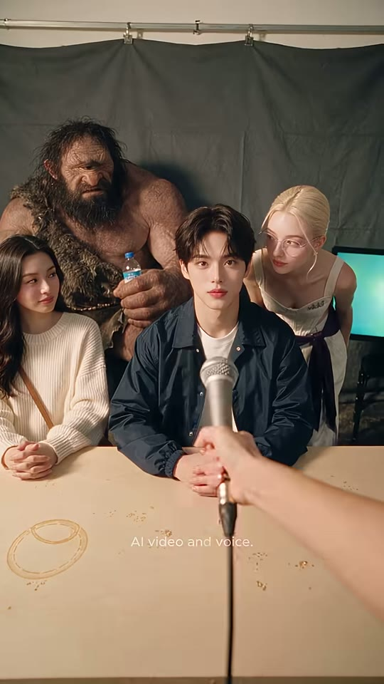
원시인(서브)
긴머리 여성(서브)
부키
보키
기자 손+마이크
틸 모니터
샷WS앵글아이레벨(테이블 높이, 기자 시점 POV)카메라고정 + 마이크(소품)만 우하단→중앙으로 전진구도4인 그룹샷. 부키가 정중앙(수직 3분할 중앙), 보키는 오른쪽 1/3에서 부키 어깨 쪽으로 몸을 숙여 엿봄, 왼쪽 1/3에 검은 긴머리 여성, 뒤 왼쪽에 거대한 원시인. 하단 35%는 테이블(커피 얼룩)이 여백으로 깔림. 마이크가 화면 중앙선을 따라 부키를 향함.동작기자(오프스크린)의 손이 마이크를 부키 가슴 높이까지 쭉 내민다. 부키는 무표정 정면 응시, 보키는 호기심 어린 눈으로 부키 쪽으로 기울어 있음, 긴머리 여성은 부키를 곁눈질, 원시인은 물병을 든 채 인상 씀.대사(대사 없음 — 기자회견장 룸톤, 추정)화면 자막없음 (하단 'AI video and voice.' 고지 문구만 상시 표시)들어오는 전환영상 시작(첫 프레임부터 풀 화면, 페이드인 없음)효과음/음악BGM 시작 + 카메라 셔터음/웅성거림(추정)역할훅/설정 제시: 0.79초 만에 '기자회견' 상황과 등장인물 4명을 한 번에 인지시킴 (원시인이라는 이질적 요소로 스크롤 정지)
1순위
veo-3-14인 와이드 인물 일관성·공간감, 마이크 푸시 같은 카메라/소품 무브
2순위
kling-v3첫 프레임 고정 image2video 안정적
3순위
wan-v3-0저비용 와이드 대안
① 이미지 프롬프트 (원본 클론)photoreal cinematic live-action, vertical 9:16, 608x1080 composition, shallow depth of field, small press-conference set: dark olive-grey muslin backdrop (#4B524A) hanging in soft folds from a chrome pipe rail with metal clamps, light beige wooden table with faded brown coffee-cup rings and scattered crumbs in the foreground, a small monitor glowing teal (#3FD0C0) at the far right edge, warm soft tungsten key light from camera-left front, gentle negative fill on the right, creamy skin tones, subtle film grain, Kodak-like warm grade. Wide eye-level POV shot from a reporter's seat across the table. Center: Buki, a handsome Korean man in his early 20s, idol-like soft features, fair skin, dark brown-black curtain-fringe hair falling over the forehead, soft rosy lips, wearing a navy-blue cotton coach jacket with silver snap buttons over a plain white crew-neck T-shirt, seated with forearms on the table, calm neutral face looking straight at camera. Right third: Voki, a Caucasian woman in her 20s, platinum-blonde hair slicked back into a low bun with two thin face-framing strands, round thin lavender-pink metal-frame glasses, blue-grey eyes, small pearl-cluster stud earrings, cream sweetheart corset top with a small purple embroidered 'vkki' logo on the left bust, white wide trousers with a dark plum sash tied at the waist, leaning in over his right shoulder, peeking at him curiously. Left third: a Korean woman with long wavy black hair in a cream cable-knit sweater with a tan crossbody bag strap, hands clasped on the table; behind them a huge hairy caveman with a bushy dark beard and a fur pelt over one shoulder holding a small plastic water bottle with a blue label. Foreground: a bare human forearm and hand entering from bottom-right holding a silver handheld dynamic microphone with a black cable pointing the mic at Buki's chest. 35mm lens, f/4, everyone sharp.
② 영상 프롬프트 (원본 클론)Duration 0.79s. Static locked-off camera. The reporter's hand pushes the microphone forward from bottom-right toward Buki's chest in one smooth motion. Buki stays still with a neutral face, Voki leans slightly closer, the long-haired woman glances at Buki, the caveman frowns. No dialogue, faint press-room murmur and a camera shutter click.
③ 동물 버전 이미지 프롬프트photoreal cinematic live-action with realistic fur (not cartoon), anthropomorphic animals at human scale, vertical 9:16, shallow depth of field, same press-conference set (small press-conference set: dark olive-grey muslin backdrop (#4B524A) hanging in soft folds from a chrome pipe rail with metal clamps, light beige wooden table with faded brown coffee-cup rings and scattered crumbs in the foreground, a small monitor glowing teal (#3FD0C0) at the far right edge, warm soft tungsten key light from camera-left front, gentle negative fill on the right, creamy skin tones, subtle film grain, Kodak-like warm grade). Wide eye-level POV across the table. Center: Hamjji, an anthropomorphic golden-and-white Syrian hamster sitting upright like a person, big glossy black eyes, pink nose, fluffy forehead fur styled like a curtain fringe, wearing a tiny navy-blue coach jacket with silver snap buttons over a white crew-neck T-shirt, seated with paws on the table, calm neutral face. Right third: Voki-cat, an anthropomorphic cream Ragdoll cat with blue eyes, head fur swept back sleek like a low bun with two wispy strands, round thin lavender-pink metal-frame glasses, pearl stud earrings on the ears, cream sweetheart corset top with a small purple embroidered 'vkki' logo, white wide trousers with a dark plum sash, leaning in over his shoulder, curious. Left third: a black-and-white tuxedo cat in a cream cable-knit sweater with a tan crossbody strap, paws clasped on the table; behind them a gigantic shaggy brown Maine Coon cat dressed as a caveman with a fur pelt over one shoulder, holding a tiny plastic water bottle. Foreground: an orange tabby cat's furry forearm and paw entering from bottom-right holding a silver handheld dynamic microphone with a black cable pointing the mic at Hamjji. 35mm, f/4.
④ 동물 버전 영상 프롬프트Duration 0.79s. Static camera. The ginger paw pushes the microphone toward Hamjji. Hamjji's whiskers twitch but his face stays neutral; Voki-cat leans closer, ears forward; the tuxedo cat glances sideways; the giant Maine Coon caveman frowns holding the tiny bottle. Press-room murmur, one shutter click.
네거티브[human version] cartoon, anime, 3d render look, plastic skin, extra fingers, deformed hands, fused fingers, warped face, identity drift, double face, text artifacts, misspelled captions, random logos, watermark, subtitles baked in, low resolution, heavy motion blur, jitter, flicker, overexposed, oversaturated, fisheye distortion, dutch angle, letterbox, horizontal 16:9 framing || [animal version] human faces, human skin, realistic human hands (except where specified), creepy uncanny hybrid, mutated paws, extra limbs, cartoon 2D, low-poly, fur clumping artifacts, plastic fur, misspelled text, random logos, baked subtitles, flicker, jitter, 16:9 framing
컷 2 · 틀린 표현 제시(오답 'I can't tell') — 학습 포인트의 '문
0.79s → 5.04s (4.25s)

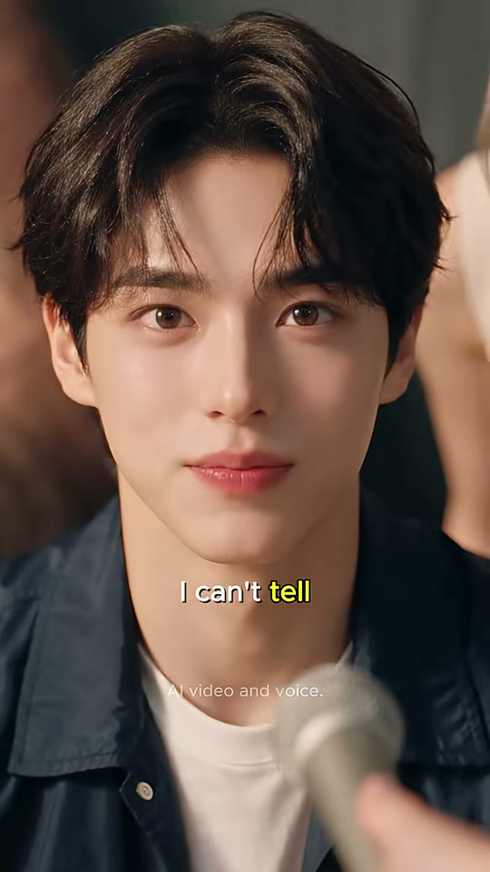
부키 얼굴
부키 상반신
마이크
샷CU앵글아이레벨 정면(살짝 로우 5°, 추정)카메라고정(미세 핸드헬드 흔들림 수준), 마이크만 프레임 하단 우측에서 들어옴구도부키 얼굴이 화면 상단 60%를 꽉 채움(눈선이 상단 1/3선). 헤드룸 거의 없음. 마이크 헤드가 우하단 1/4에 아웃포커스로 걸림. 배경 좌: 원시인 피부 보케, 우: 보키 팔 보케.동작처음엔 무표정으로 정면 → 1.5초쯤 눈을 왼쪽 아래로 굴리며 생각 → 다시 정면 보며 'A sequel?' 되묻고, 잠깐 멈춘 뒤 담담하게 'I can't tell.' (자신은 '말할 수 없다'는 뜻으로 했지만 '모르겠다'로 들리는 오류). 손동작 없음.대사부키: "A sequel?" (2.40~) … "I can't tell." (3.92~5.04)화면 자막"A sequel?" (흰색, 2.40~3.88, y≈65%) → "I can't tell" — 'tell' 노란색 하이라이트(#F5F02A), y≈68%, 3.92~5.04들어오는 전환하드컷 (WS→CU 점프: 질문 받은 사람에게 즉시 시선 집중)효과음/음악BGM 지속, 대사 구간 약간 덕킹역할틀린 표현 제시(오답 'I can't tell') — 학습 포인트의 '문제' 단계
1순위
minimax-h3대사 립싱크+음성 동시 생성, 무료 — CU 대사컷 기본
2순위
seedance-2-5원본 해시태그(#seedance25)와 같은 계열, 미세표정·피부질감 재현 우수
3순위
kling-v3-omni레퍼런스 이미지 고정력+립싱크 백업
① 이미지 프롬프트 (원본 클론)photoreal cinematic live-action, vertical 9:16, 608x1080 composition, shallow depth of field, small press-conference set: dark olive-grey muslin backdrop (#4B524A) hanging in soft folds from a chrome pipe rail with metal clamps, light beige wooden table with faded brown coffee-cup rings and scattered crumbs in the foreground, a small monitor glowing teal (#3FD0C0) at the far right edge, warm soft tungsten key light from camera-left front, gentle negative fill on the right, creamy skin tones, subtle film grain, Kodak-like warm grade blurred into bokeh. Close-up, eye-level frontal portrait of Buki, a handsome Korean man in his early 20s, idol-like soft features, fair skin, dark brown-black curtain-fringe hair falling over the forehead, soft rosy lips, wearing a navy-blue cotton coach jacket with silver snap buttons over a plain white crew-neck T-shirt. Face fills the top 60% of the frame, eyes on the upper third line, almost no headroom. Out-of-focus silver microphone head intruding from the bottom-right corner held by a hand. Background left: blurred warm skin tones of the caveman; right: blurred cream shoulder of Voki. 85mm lens, f/1.8, soft warm key light from left, catchlights in eyes.
② 영상 프롬프트 (원본 클론)Duration 4.25s. Nearly static camera with subtle handheld breathing. Buki looks at camera, then his eyes drift down-left as if thinking (around 0.7s), return to camera, and he says calmly with clear lip-sync: "A sequel?" (at ~1.6s), a short pause, then "I can't tell." (at ~3.1s), ending with a neutral closed-mouth look. Soft young male voice, relaxed, slightly deadpan.
③ 동물 버전 이미지 프롬프트photoreal cinematic live-action with realistic fur (not cartoon), anthropomorphic animals at human scale, vertical 9:16, shallow depth of field. Close-up frontal portrait of Hamjji, an anthropomorphic golden-and-white Syrian hamster sitting upright like a person, big glossy black eyes, pink nose, fluffy forehead fur styled like a curtain fringe, wearing a tiny navy-blue coach jacket with silver snap buttons over a white crew-neck T-shirt. Face fills the top 60% of the frame, eyes on the upper third line. Out-of-focus silver microphone intruding bottom-right held by a ginger cat paw. Blurred brown fur (Maine Coon) on the left, blurred cream fur on the right. 85mm f/1.8, warm key light from left, catchlights in the big black eyes.
④ 동물 버전 영상 프롬프트Duration 4.25s. Subtle handheld breathing. Hamjji looks at camera, eyes drift down-left thinking, cheeks puff slightly, then he says with mouth-synced animation: "A sequel?" (~1.6s) … "I can't tell." (~3.1s). Whiskers twitch, calm deadpan cute male voice.
네거티브[human version] cartoon, anime, 3d render look, plastic skin, extra fingers, deformed hands, fused fingers, warped face, identity drift, double face, text artifacts, misspelled captions, random logos, watermark, subtitles baked in, low resolution, heavy motion blur, jitter, flicker, overexposed, oversaturated, fisheye distortion, dutch angle, letterbox, horizontal 16:9 framing || [animal version] human faces, human skin, realistic human hands (except where specified), creepy uncanny hybrid, mutated paws, extra limbs, cartoon 2D, low-poly, fur clumping artifacts, plastic fur, misspelled text, random logos, baked subtitles, flicker, jitter, 16:9 framing
컷 3 · 리액션/갈등 고조: 오답 때문에 기자가 더 파고든다는 결과를 말 없이 보여줌
5.04s → 7.08s (2.04s)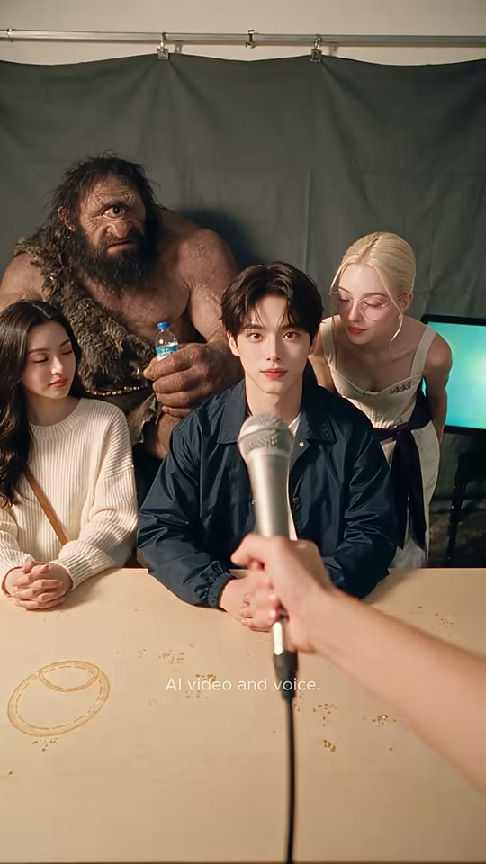

부키(보케)
마이크 그릴(초점)
기자 손
보키
샷WS → 마이크 ECU(초점 이동)앵글아이레벨 POV카메라마이크가 렌즈 쪽으로 급접근(스냅 푸시) + 랙포커스(인물→마이크 그릴)구도시작은 1번 컷과 동일한 4인 구도. 0.5초 후 기자 손이 마이크를 렌즈 바로 앞(화면 중앙, 폭 40%)까지 들이밀고 초점이 마이크 그릴로 이동 → 인물들은 완전 보케.동작'모르겠다(I can't tell)'로 들은 기자가 '그럼 알 때까지 묻겠다'는 듯 마이크를 부키에게 더 들이미는 시각 개그. 긴머리 여성은 눈을 감고(민망), 보키는 흥미롭게 몸을 더 숙임.대사(대사 없음)화면 자막없음들어오는 전환하드컷 (CU→WS, 오해의 결과를 보여주는 리액션 컷)효과음/음악마이크 휙 들어오는 whoosh + 핸들링 노이즈(추정)역할리액션/갈등 고조: 오답 때문에 기자가 더 파고든다는 결과를 말 없이 보여줌
1순위
veo-3-14인 와이드 인물 일관성·공간감, 마이크 푸시 같은 카메라/소품 무브
2순위
kling-v3첫 프레임 고정 image2video 안정적
3순위
wan-v3-0저비용 와이드 대안
① 이미지 프롬프트 (원본 클론)photoreal cinematic live-action, vertical 9:16, 608x1080 composition, shallow depth of field, small press-conference set: dark olive-grey muslin backdrop (#4B524A) hanging in soft folds from a chrome pipe rail with metal clamps, light beige wooden table with faded brown coffee-cup rings and scattered crumbs in the foreground, a small monitor glowing teal (#3FD0C0) at the far right edge, warm soft tungsten key light from camera-left front, gentle negative fill on the right, creamy skin tones, subtle film grain, Kodak-like warm grade. Wide eye-level POV across the table identical to the opening shot: Buki, a handsome Korean man in his early 20s, idol-like soft features, fair skin, dark brown-black curtain-fringe hair falling over the forehead, soft rosy lips, wearing a navy-blue cotton coach jacket with silver snap buttons over a plain white crew-neck T-shirt center, Voki, a Caucasian woman in her 20s, platinum-blonde hair slicked back into a low bun with two thin face-framing strands, round thin lavender-pink metal-frame glasses, blue-grey eyes, small pearl-cluster stud earrings, cream sweetheart corset top with a small purple embroidered 'vkki' logo on the left bust, white wide trousers with a dark plum sash tied at the waist leaning over his right shoulder, a Korean woman with long wavy black hair in a cream cable-knit sweater with a tan crossbody bag strap, hands clasped on the table; behind them a huge hairy caveman with a bushy dark beard and a fur pelt over one shoulder holding a small plastic water bottle with a blue label. a bare human forearm and hand entering from bottom-right holding a silver handheld dynamic microphone with a black cable holding the mic at mid-frame. 35mm, f/4.
② 영상 프롬프트 (원본 클론)Duration 2.04s. Starts on the wide group. At ~0.5s the reporter's hand thrusts the silver microphone straight toward the lens until the mesh grille fills the center of the frame; focus racks from the people to the microphone grille, the group dissolves into soft bokeh. The long-haired woman closes her eyes awkwardly, Voki leans in with interest. No dialogue, a quick whoosh.
③ 동물 버전 이미지 프롬프트photoreal cinematic live-action with realistic fur (not cartoon), anthropomorphic animals at human scale, vertical 9:16, shallow depth of field, small press-conference set: dark olive-grey muslin backdrop (#4B524A) hanging in soft folds from a chrome pipe rail with metal clamps, light beige wooden table with faded brown coffee-cup rings and scattered crumbs in the foreground, a small monitor glowing teal (#3FD0C0) at the far right edge, warm soft tungsten key light from camera-left front, gentle negative fill on the right, creamy skin tones, subtle film grain, Kodak-like warm grade. Wide eye-level POV: Hamjji, an anthropomorphic golden-and-white Syrian hamster sitting upright like a person, big glossy black eyes, pink nose, fluffy forehead fur styled like a curtain fringe, wearing a tiny navy-blue coach jacket with silver snap buttons over a white crew-neck T-shirt center, Voki-cat, an anthropomorphic cream Ragdoll cat with blue eyes, head fur swept back sleek like a low bun with two wispy strands, round thin lavender-pink metal-frame glasses, pearl stud earrings on the ears, cream sweetheart corset top with a small purple embroidered 'vkki' logo, white wide trousers with a dark plum sash leaning over his shoulder, a black-and-white tuxedo cat in a cream cable-knit sweater with a tan crossbody strap, paws clasped on the table; behind them a gigantic shaggy brown Maine Coon cat dressed as a caveman with a fur pelt over one shoulder, holding a tiny plastic water bottle. an orange tabby cat's furry forearm and paw entering from bottom-right holding a silver handheld dynamic microphone with a black cable holding the mic mid-frame. 35mm f/4.
④ 동물 버전 영상 프롬프트Duration 2.04s. At ~0.5s the ginger paw thrusts the microphone right up to the lens, focus racks to the mesh grille, the animals blur into bokeh. The tuxedo cat squeezes its eyes shut, Voki-cat's ears perk up as she leans in. Whoosh sound, no dialogue.
네거티브[human version] cartoon, anime, 3d render look, plastic skin, extra fingers, deformed hands, fused fingers, warped face, identity drift, double face, text artifacts, misspelled captions, random logos, watermark, subtitles baked in, low resolution, heavy motion blur, jitter, flicker, overexposed, oversaturated, fisheye distortion, dutch angle, letterbox, horizontal 16:9 framing || [animal version] human faces, human skin, realistic human hands (except where specified), creepy uncanny hybrid, mutated paws, extra limbs, cartoon 2D, low-poly, fur clumping artifacts, plastic fur, misspelled text, random logos, baked subtitles, flicker, jitter, 16:9 framing
컷 4 · 교정 1단계: 왜 틀렸는지(뉘앙스) 설명
7.08s → 8.83s (1.75s)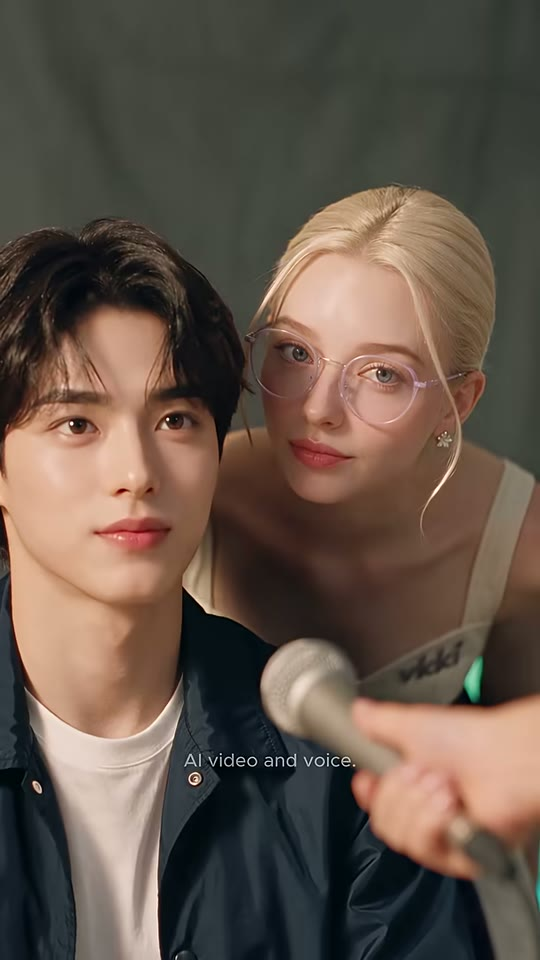

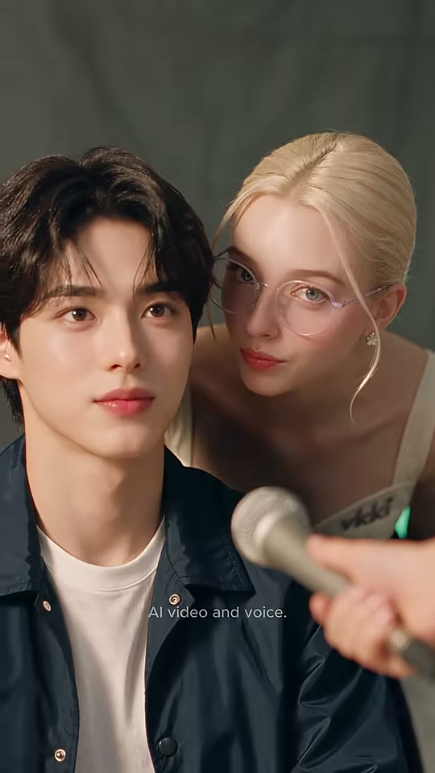
부키
보키
마이크+손
샷MCU 투샷앵글아이레벨, 약간 오른쪽에서카메라고정(미세 푸시인, 추정)구도부키가 왼쪽 1/2(얼굴 눈선 y≈40%), 보키가 오른쪽 뒤에서 부키 어깨 너머로 얼굴을 들이밀어 부키 귀 옆에서 속삭이는 구도. 마이크는 오른쪽 하단에서 대각선으로 들어옴. 배경 올리브 회색 천만 보임.동작보키가 부키 쪽으로 고개를 돌려 입술을 내밀고 장난스럽게 '그건 모른다는 뜻이야'라고 알려줌. 부키는 정면 무표정(살짝 눈썹 올림).대사보키: "That means you don't know."화면 자막"That means you don't know" — 'you don't know' 노란색, y≈62%, 7.30~8.79 (하이라이트 7.58부터)들어오는 전환하드컷효과음/음악BGM 지속역할교정 1단계: 왜 틀렸는지(뉘앙스) 설명
1순위
minimax-h3대사 립싱크+음성 동시 생성, 무료 — CU 대사컷 기본
2순위
seedance-2-5원본 해시태그(#seedance25)와 같은 계열, 미세표정·피부질감 재현 우수
3순위
kling-v3-omni레퍼런스 이미지 고정력+립싱크 백업
① 이미지 프롬프트 (원본 클론)photoreal cinematic live-action, vertical 9:16, 608x1080 composition, shallow depth of field, olive-grey muslin backdrop. Medium close-up two-shot, eye-level, slightly from the right: Buki, a handsome Korean man in his early 20s, idol-like soft features, fair skin, dark brown-black curtain-fringe hair falling over the forehead, soft rosy lips, wearing a navy-blue cotton coach jacket with silver snap buttons over a plain white crew-neck T-shirt on the left half facing camera with a neutral face; Voki, a Caucasian woman in her 20s, platinum-blonde hair slicked back into a low bun with two thin face-framing strands, round thin lavender-pink metal-frame glasses, blue-grey eyes, small pearl-cluster stud earrings, cream sweetheart corset top with a small purple embroidered 'vkki' logo on the left bust, white wide trousers with a dark plum sash tied at the waist leaning in from behind his right shoulder, her face close to his ear, turned toward him, lips slightly pursed. A silver microphone enters diagonally from bottom-right in soft focus. 50mm f/2, warm soft key from left.
② 영상 프롬프트 (원본 클론)Duration 1.75s. Almost static, very slow push-in. Voki turns her face toward Buki and says teasingly with lip-sync: "That means you don't know." Buki keeps looking at camera, one eyebrow rising slightly. Playful female voice, light American accent.
③ 동물 버전 이미지 프롬프트photoreal cinematic live-action with realistic fur (not cartoon), anthropomorphic animals at human scale, vertical 9:16, shallow depth of field, olive-grey muslin backdrop. Medium close-up two-shot: Hamjji, an anthropomorphic golden-and-white Syrian hamster sitting upright like a person, big glossy black eyes, pink nose, fluffy forehead fur styled like a curtain fringe, wearing a tiny navy-blue coach jacket with silver snap buttons over a white crew-neck T-shirt on the left half facing camera; Voki-cat, an anthropomorphic cream Ragdoll cat with blue eyes, head fur swept back sleek like a low bun with two wispy strands, round thin lavender-pink metal-frame glasses, pearl stud earrings on the ears, cream sweetheart corset top with a small purple embroidered 'vkki' logo, white wide trousers with a dark plum sash leaning in from behind his shoulder, muzzle near his ear, turned toward him. Silver mic in soft focus bottom-right held by a ginger paw. 50mm f/2.
④ 동물 버전 영상 프롬프트Duration 1.75s. Very slow push-in. Voki-cat turns to Hamjji and says with mouth-synced animation: "That means you don't know." Hamjji keeps facing camera, one ear flicks. Playful female voice.
네거티브[human version] cartoon, anime, 3d render look, plastic skin, extra fingers, deformed hands, fused fingers, warped face, identity drift, double face, text artifacts, misspelled captions, random logos, watermark, subtitles baked in, low resolution, heavy motion blur, jitter, flicker, overexposed, oversaturated, fisheye distortion, dutch angle, letterbox, horizontal 16:9 framing || [animal version] human faces, human skin, realistic human hands (except where specified), creepy uncanny hybrid, mutated paws, extra limbs, cartoon 2D, low-poly, fur clumping artifacts, plastic fur, misspelled text, random logos, baked subtitles, flicker, jitter, 16:9 framing
컷 5 · 정답 제시(핵심 학습 문장 'I can't say')
8.83s → 11.46s (2.63s)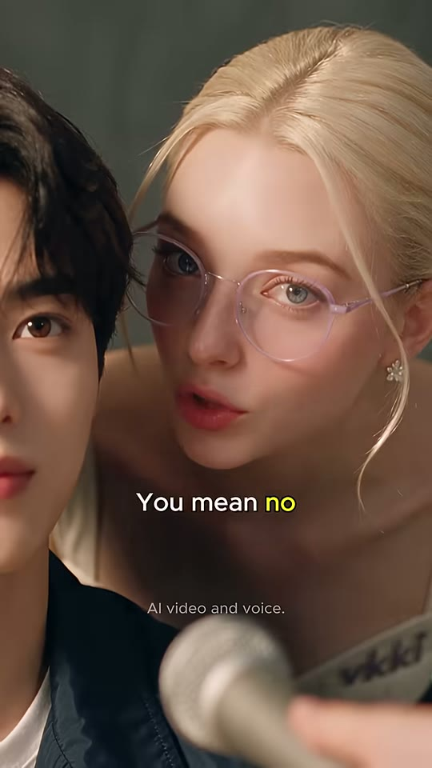


보키 얼굴
부키(반쪽, 전경)
마이크
샷CU(보키) — 끝에 틸트/상승으로 MCU 흐림앵글아이레벨, 부키 어깨 걸친 OTS 느낌카메라고정 → 끝 0.5초 보키가 몸을 일으키며 얼굴이 프레임 위로 빠짐 + 포커스 소프트구도보키 얼굴이 오른쪽 2/3(눈 y≈38%), 부키 얼굴 반쪽이 왼쪽 가장자리 30%에 잘려 걸림(전경). 마이크 하단 중앙. 마지막엔 보키의 코르셋 상의(vkki 로고)만 흐릿하게 남음.동작보키가 카메라 가까이서 입을 크게 벌리며 'You mean no' → 손가락 없이 표정으로 강조 'Say: I can't say' (정답 제시). 말이 끝나자 만족한 듯 허리를 펴며 일어섬.대사보키: "You mean no." … "Say: I can't say."화면 자막"You mean no" ('no' 노랑, 8.92~9.95) → "Say: I can't say" ('say' 노랑, 9.95~11.29), y≈65%들어오는 전환하드컷 (투샷→단독 CU로 좁혀 정답 강조)효과음/음악BGM 지속 (자동자막에 [music] 표기 — 이 구간 BGM이 앞으로 나옴)역할정답 제시(핵심 학습 문장 'I can't say')
1순위
minimax-h3대사 립싱크+음성 동시 생성, 무료 — CU 대사컷 기본
2순위
seedance-2-5원본 해시태그(#seedance25)와 같은 계열, 미세표정·피부질감 재현 우수
3순위
kling-v3-omni레퍼런스 이미지 고정력+립싱크 백업
① 이미지 프롬프트 (원본 클론)photoreal cinematic live-action, vertical 9:16, 608x1080 composition, shallow depth of field, olive-grey muslin backdrop. Close-up of Voki, a Caucasian woman in her 20s, platinum-blonde hair slicked back into a low bun with two thin face-framing strands, round thin lavender-pink metal-frame glasses, blue-grey eyes, small pearl-cluster stud earrings, cream sweetheart corset top with a small purple embroidered 'vkki' logo on the left bust, white wide trousers with a dark plum sash tied at the waist, face on the right two-thirds of the frame, eyes on the upper third, leaning toward camera, playful expression. Foreground left edge: half of Buki's face and dark fringe, cropped by the frame, in slightly soft focus. Bottom: silver microphone head out of focus. 85mm f/1.8, warm key from left, pinkish glasses frames catching light.
② 영상 프롬프트 (원본 클론)Duration 2.63s. Static camera. Voki speaks toward camera with exaggerated mouth shapes and lip-sync: "You mean no." (0.1s) then "Say: I can't say." (~1.2s), stressing 'say'. In the last 0.6s she straightens up, her face rising out of the top of frame, leaving her cream corset top with the purple 'vkki' logo in soft focus.
③ 동물 버전 이미지 프롬프트photoreal cinematic live-action with realistic fur (not cartoon), anthropomorphic animals at human scale, vertical 9:16, shallow depth of field, olive-grey backdrop. Close-up of Voki-cat, an anthropomorphic cream Ragdoll cat with blue eyes, head fur swept back sleek like a low bun with two wispy strands, round thin lavender-pink metal-frame glasses, pearl stud earrings on the ears, cream sweetheart corset top with a small purple embroidered 'vkki' logo, white wide trousers with a dark plum sash, face on the right two-thirds, leaning toward camera, playful. Foreground left edge: half of Hamjji's fluffy face cropped, slightly soft. Silver mic bottom out of focus. 85mm f/1.8.
④ 동물 버전 영상 프롬프트Duration 2.63s. Voki-cat says with mouth-synced animation: "You mean no." then "Say: I can't say.", stressing 'say', whiskers forward. In the last 0.6s she stands up straight, her face leaving the top of frame, revealing her corset top with the 'vkki' logo in soft focus.
네거티브[human version] cartoon, anime, 3d render look, plastic skin, extra fingers, deformed hands, fused fingers, warped face, identity drift, double face, text artifacts, misspelled captions, random logos, watermark, subtitles baked in, low resolution, heavy motion blur, jitter, flicker, overexposed, oversaturated, fisheye distortion, dutch angle, letterbox, horizontal 16:9 framing || [animal version] human faces, human skin, realistic human hands (except where specified), creepy uncanny hybrid, mutated paws, extra limbs, cartoon 2D, low-poly, fur clumping artifacts, plastic fur, misspelled text, random logos, baked subtitles, flicker, jitter, 16:9 framing
컷 6 · 따라 말하기(학습 반복 1회차)
11.46s → 14.0s (2.54s)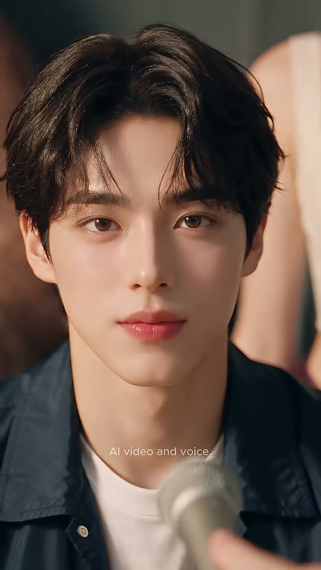
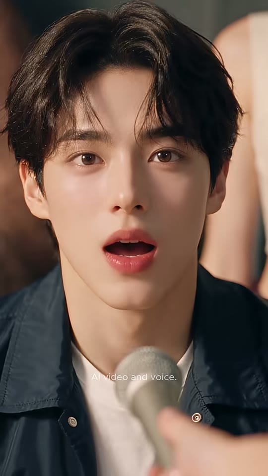

부키 얼굴
마이크
샷CU앵글아이레벨 정면카메라고정구도2번 컷과 동일 프레이밍(재사용 앵글): 얼굴 상단 60%, 마이크 우하단.동작부키가 숨을 들이쉬듯 입을 벌렸다가(12.0~12.5), 또박또박 'I can't say.' — 정답을 따라 말함. 표정은 여전히 담담.대사부키: "I can't say." (13.04~)화면 자막"I can't say" — 'say' 노랑, y≈70%, 13.04~14.00들어오는 전환하드컷효과음/음악BGM 지속역할따라 말하기(학습 반복 1회차)
1순위
minimax-h3대사 립싱크+음성 동시 생성, 무료 — CU 대사컷 기본
2순위
seedance-2-5원본 해시태그(#seedance25)와 같은 계열, 미세표정·피부질감 재현 우수
3순위
kling-v3-omni레퍼런스 이미지 고정력+립싱크 백업
① 이미지 프롬프트 (원본 클론)photoreal cinematic live-action, vertical 9:16, 608x1080 composition, shallow depth of field, small press-conference set: dark olive-grey muslin backdrop (#4B524A) hanging in soft folds from a chrome pipe rail with metal clamps, light beige wooden table with faded brown coffee-cup rings and scattered crumbs in the foreground, a small monitor glowing teal (#3FD0C0) at the far right edge, warm soft tungsten key light from camera-left front, gentle negative fill on the right, creamy skin tones, subtle film grain, Kodak-like warm grade in bokeh. Close-up eye-level frontal portrait of Buki, a handsome Korean man in his early 20s, idol-like soft features, fair skin, dark brown-black curtain-fringe hair falling over the forehead, soft rosy lips, wearing a navy-blue cotton coach jacket with silver snap buttons over a plain white crew-neck T-shirt, same framing as before: face fills top 60%, blurred silver mic bottom-right. 85mm f/1.8, soft warm key from left.
② 영상 프롬프트 (원본 클론)Duration 2.54s. Static. Buki inhales with lips parted (0.5–1.0s), then says clearly with lip-sync: "I can't say." (~1.6s), finishing with a calm closed-mouth look. Soft, deliberate male voice.
③ 동물 버전 이미지 프롬프트photoreal cinematic live-action with realistic fur (not cartoon), anthropomorphic animals at human scale, vertical 9:16, shallow depth of field. Close-up frontal portrait of Hamjji, an anthropomorphic golden-and-white Syrian hamster sitting upright like a person, big glossy black eyes, pink nose, fluffy forehead fur styled like a curtain fringe, wearing a tiny navy-blue coach jacket with silver snap buttons over a white crew-neck T-shirt, same framing: face fills top 60%, blurred mic bottom-right held by a ginger paw. 85mm f/1.8.
④ 동물 버전 영상 프롬프트Duration 2.54s. Hamjji takes a little breath (cheeks puff), then says with mouth-synced animation: "I can't say." (~1.6s), ending with a calm look and a nose twitch.
네거티브[human version] cartoon, anime, 3d render look, plastic skin, extra fingers, deformed hands, fused fingers, warped face, identity drift, double face, text artifacts, misspelled captions, random logos, watermark, subtitles baked in, low resolution, heavy motion blur, jitter, flicker, overexposed, oversaturated, fisheye distortion, dutch angle, letterbox, horizontal 16:9 framing || [animal version] human faces, human skin, realistic human hands (except where specified), creepy uncanny hybrid, mutated paws, extra limbs, cartoon 2D, low-poly, fur clumping artifacts, plastic fur, misspelled text, random logos, baked subtitles, flicker, jitter, 16:9 framing
컷 7 · 퀴즈/참여 유도(빈칸 채우기) — 시청자 입으로 한번 더 말하게 만듦
14.0s → 15.13s (1.13s)
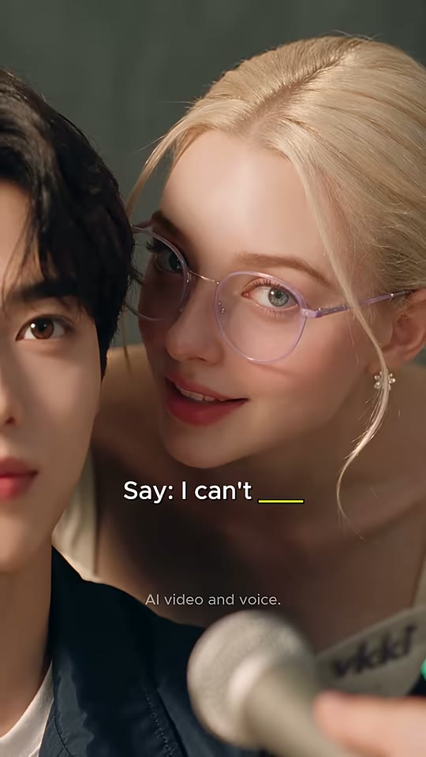

보키 얼굴
부키(반쪽)
마이크
샷CU(보키)앵글아이레벨카메라고정 → 끝에서 포커스 소프트(보키 뒤로 빠짐)구도5번 컷과 동일 구도(보키 오른쪽 2/3, 부키 반쪽 왼쪽 전경).동작보키가 미소 지으며 다시 한번 'Say: I can't say'를 유도. 자막은 정답 자리를 빈칸으로 비워 시청자 참여 유도.대사보키: "Say: I can't say." (자동자막 14.00)화면 자막"Say: I can't ____" — 빈칸 밑줄 노랑, y≈65%, 14.00~15.13 (퀴즈형)들어오는 전환하드컷효과음/음악BGM 지속역할퀴즈/참여 유도(빈칸 채우기) — 시청자 입으로 한번 더 말하게 만듦
1순위
seedance-2-5무표정→장난스러운 미소 같은 미세표정 연기
2순위
minimax-h3대사 포함 시 립싱크+음성 일괄
3순위
kling-v3클로즈업 피부/머리카락 디테일
① 이미지 프롬프트 (원본 클론)photoreal cinematic live-action, vertical 9:16, 608x1080 composition, shallow depth of field, olive-grey backdrop. Close-up of Voki, a Caucasian woman in her 20s, platinum-blonde hair slicked back into a low bun with two thin face-framing strands, round thin lavender-pink metal-frame glasses, blue-grey eyes, small pearl-cluster stud earrings, cream sweetheart corset top with a small purple embroidered 'vkki' logo on the left bust, white wide trousers with a dark plum sash tied at the waist smiling slyly, face on the right two-thirds, half of Buki's face cropped at the left edge in the foreground, silver mic out of focus at the bottom. 85mm f/1.8.
② 영상 프롬프트 (원본 클론)Duration 1.13s. Static. Voki smiles and says with lip-sync: "Say: I can't say." in an encouraging tone, then leans back slightly so focus softens on her face at the end.
③ 동물 버전 이미지 프롬프트photoreal cinematic live-action with realistic fur (not cartoon), anthropomorphic animals at human scale, vertical 9:16, shallow depth of field, olive-grey backdrop. Close-up of Voki-cat, an anthropomorphic cream Ragdoll cat with blue eyes, head fur swept back sleek like a low bun with two wispy strands, round thin lavender-pink metal-frame glasses, pearl stud earrings on the ears, cream sweetheart corset top with a small purple embroidered 'vkki' logo, white wide trousers with a dark plum sash smiling slyly, half of Hamjji's face cropped at left edge, mic out of focus bottom. 85mm f/1.8.
④ 동물 버전 영상 프롬프트Duration 1.13s. Voki-cat smiles, says with mouth-synced animation: "Say: I can't say." encouragingly, then leans back so her face goes slightly soft.
네거티브[human version] cartoon, anime, 3d render look, plastic skin, extra fingers, deformed hands, fused fingers, warped face, identity drift, double face, text artifacts, misspelled captions, random logos, watermark, subtitles baked in, low resolution, heavy motion blur, jitter, flicker, overexposed, oversaturated, fisheye distortion, dutch angle, letterbox, horizontal 16:9 framing || [animal version] human faces, human skin, realistic human hands (except where specified), creepy uncanny hybrid, mutated paws, extra limbs, cartoon 2D, low-poly, fur clumping artifacts, plastic fur, misspelled text, random logos, baked subtitles, flicker, jitter, 16:9 framing
컷 8 · 시청자 따라 말하기 간격(쉐도잉 포즈)
15.13s → 16.29s (1.17s)
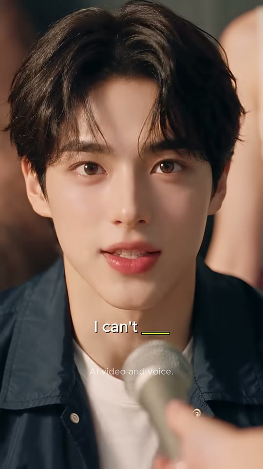
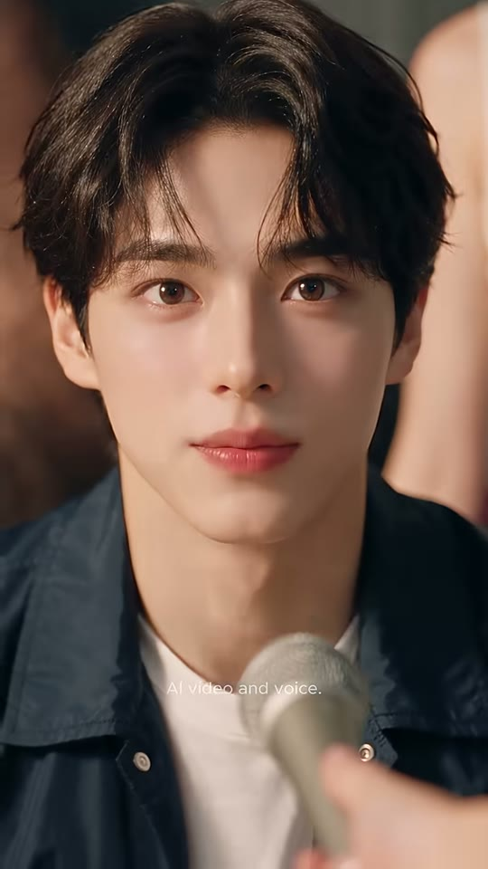
부키 얼굴
마이크
샷CU앵글아이레벨 정면카메라고정구도2·6번과 동일 프레이밍.동작부키가 입을 크게 벌렸다가('I can't…') 말끝을 흐리며 입을 다묾 — 시청자가 빈칸을 채울 틈(대사 오디오 없음, 추정).대사부키: (입 모양만 "I can't…", 음성 거의 없음 — 추정)화면 자막"I can't ____" — 빈칸 노랑, y≈70%, 15.13~16.21들어오는 전환하드컷효과음/음악BGM만 (대사 공백 = 시청자 따라말하기 간격)역할시청자 따라 말하기 간격(쉐도잉 포즈)
1순위
seedance-2-5무표정→장난스러운 미소 같은 미세표정 연기
2순위
minimax-h3대사 포함 시 립싱크+음성 일괄
3순위
kling-v3클로즈업 피부/머리카락 디테일
① 이미지 프롬프트 (원본 클론)photoreal cinematic live-action, vertical 9:16, 608x1080 composition, shallow depth of field, small press-conference set: dark olive-grey muslin backdrop (#4B524A) hanging in soft folds from a chrome pipe rail with metal clamps, light beige wooden table with faded brown coffee-cup rings and scattered crumbs in the foreground, a small monitor glowing teal (#3FD0C0) at the far right edge, warm soft tungsten key light from camera-left front, gentle negative fill on the right, creamy skin tones, subtle film grain, Kodak-like warm grade in bokeh. Close-up frontal portrait of Buki, a handsome Korean man in his early 20s, idol-like soft features, fair skin, dark brown-black curtain-fringe hair falling over the forehead, soft rosy lips, wearing a navy-blue cotton coach jacket with silver snap buttons over a plain white crew-neck T-shirt, same framing, blurred mic bottom-right. 85mm f/1.8.
② 영상 프롬프트 (원본 클론)Duration 1.17s. Static. Buki opens his mouth wide as if starting "I can't…" then slowly closes his lips into a small calm smile, no audible words (leave a pause for the viewer).
③ 동물 버전 이미지 프롬프트photoreal cinematic live-action with realistic fur (not cartoon), anthropomorphic animals at human scale, vertical 9:16, shallow depth of field. Close-up frontal portrait of Hamjji, an anthropomorphic golden-and-white Syrian hamster sitting upright like a person, big glossy black eyes, pink nose, fluffy forehead fur styled like a curtain fringe, wearing a tiny navy-blue coach jacket with silver snap buttons over a white crew-neck T-shirt, same framing, blurred mic bottom-right. 85mm f/1.8.
④ 동물 버전 영상 프롬프트Duration 1.17s. Hamjji opens his mouth as if starting "I can't…", then closes it into a tiny smile, whiskers relaxing. No audible words.
네거티브[human version] cartoon, anime, 3d render look, plastic skin, extra fingers, deformed hands, fused fingers, warped face, identity drift, double face, text artifacts, misspelled captions, random logos, watermark, subtitles baked in, low resolution, heavy motion blur, jitter, flicker, overexposed, oversaturated, fisheye distortion, dutch angle, letterbox, horizontal 16:9 framing || [animal version] human faces, human skin, realistic human hands (except where specified), creepy uncanny hybrid, mutated paws, extra limbs, cartoon 2D, low-poly, fur clumping artifacts, plastic fur, misspelled text, random logos, baked subtitles, flicker, jitter, 16:9 framing
컷 9 · 해결 상태 제시(정답을 말하자 마이크가 물러남 — 설명란 'the mic backs off'
16.29s → 17.17s (0.88s)
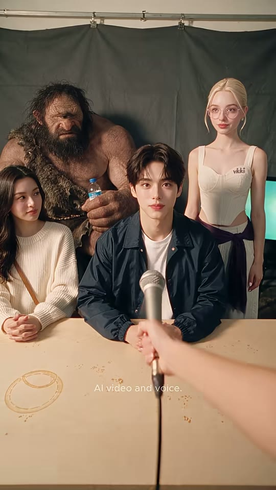
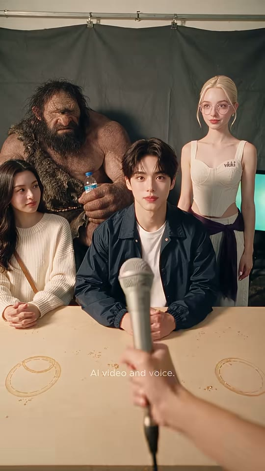
원시인
긴머리 여성
부키
보키(서 있음)
기자 손+마이크
샷WS앵글아이레벨 POV카메라고정, 마이크 살짝 하강(물러남, 추정)구도1번과 같은 와이드지만 보키가 이제 부키 오른쪽 뒤에 똑바로 서 있음(더 이상 숙이지 않음). 마이크는 중앙 하단에서 부키를 향해 그대로.동작기자가 더 이상 캐묻지 않고 마이크를 살짝 뺌. 모두 정리된 표정, 보키는 뒷짐 비슷하게 서서 은은한 미소.대사(대사 없음)화면 자막없음들어오는 전환하드컷효과음/음악BGM 지속역할해결 상태 제시(정답을 말하자 마이크가 물러남 — 설명란 'the mic backs off' 시각화)
1순위
veo-3-14인 와이드 인물 일관성·공간감, 마이크 푸시 같은 카메라/소품 무브
2순위
kling-v3첫 프레임 고정 image2video 안정적
3순위
wan-v3-0저비용 와이드 대안
① 이미지 프롬프트 (원본 클론)photoreal cinematic live-action, vertical 9:16, 608x1080 composition, shallow depth of field, small press-conference set: dark olive-grey muslin backdrop (#4B524A) hanging in soft folds from a chrome pipe rail with metal clamps, light beige wooden table with faded brown coffee-cup rings and scattered crumbs in the foreground, a small monitor glowing teal (#3FD0C0) at the far right edge, warm soft tungsten key light from camera-left front, gentle negative fill on the right, creamy skin tones, subtle film grain, Kodak-like warm grade. Wide eye-level POV across the table: Buki, a handsome Korean man in his early 20s, idol-like soft features, fair skin, dark brown-black curtain-fringe hair falling over the forehead, soft rosy lips, wearing a navy-blue cotton coach jacket with silver snap buttons over a plain white crew-neck T-shirt seated center, calm; Voki, a Caucasian woman in her 20s, platinum-blonde hair slicked back into a low bun with two thin face-framing strands, round thin lavender-pink metal-frame glasses, blue-grey eyes, small pearl-cluster stud earrings, cream sweetheart corset top with a small purple embroidered 'vkki' logo on the left bust, white wide trousers with a dark plum sash tied at the waist now standing upright behind his right shoulder with a soft smile; a Korean woman with long wavy black hair in a cream cable-knit sweater with a tan crossbody bag strap, hands clasped on the table; behind them a huge hairy caveman with a bushy dark beard and a fur pelt over one shoulder holding a small plastic water bottle with a blue label. a bare human forearm and hand entering from bottom-right holding a silver handheld dynamic microphone with a black cable holding the mic low at center. 35mm f/4.
② 영상 프롬프트 (원본 클론)Duration 0.88s. Static. The reporter's hand eases the microphone slightly down and back. Everyone settles; Voki stands upright smiling. Only ambience and music.
③ 동물 버전 이미지 프롬프트photoreal cinematic live-action with realistic fur (not cartoon), anthropomorphic animals at human scale, vertical 9:16, shallow depth of field, small press-conference set: dark olive-grey muslin backdrop (#4B524A) hanging in soft folds from a chrome pipe rail with metal clamps, light beige wooden table with faded brown coffee-cup rings and scattered crumbs in the foreground, a small monitor glowing teal (#3FD0C0) at the far right edge, warm soft tungsten key light from camera-left front, gentle negative fill on the right, creamy skin tones, subtle film grain, Kodak-like warm grade. Wide POV: Hamjji, an anthropomorphic golden-and-white Syrian hamster sitting upright like a person, big glossy black eyes, pink nose, fluffy forehead fur styled like a curtain fringe, wearing a tiny navy-blue coach jacket with silver snap buttons over a white crew-neck T-shirt center, calm; Voki-cat, an anthropomorphic cream Ragdoll cat with blue eyes, head fur swept back sleek like a low bun with two wispy strands, round thin lavender-pink metal-frame glasses, pearl stud earrings on the ears, cream sweetheart corset top with a small purple embroidered 'vkki' logo, white wide trousers with a dark plum sash standing upright behind his shoulder smiling; a black-and-white tuxedo cat in a cream cable-knit sweater with a tan crossbody strap, paws clasped on the table; behind them a gigantic shaggy brown Maine Coon cat dressed as a caveman with a fur pelt over one shoulder, holding a tiny plastic water bottle. an orange tabby cat's furry forearm and paw entering from bottom-right holding a silver handheld dynamic microphone with a black cable holding the mic low. 35mm f/4.
④ 동물 버전 영상 프롬프트Duration 0.88s. The ginger paw eases the mic down and back. Hamjji relaxes, Voki-cat stands tall smiling, the tuxedo cat blinks slowly. Ambience only.
네거티브[human version] cartoon, anime, 3d render look, plastic skin, extra fingers, deformed hands, fused fingers, warped face, identity drift, double face, text artifacts, misspelled captions, random logos, watermark, subtitles baked in, low resolution, heavy motion blur, jitter, flicker, overexposed, oversaturated, fisheye distortion, dutch angle, letterbox, horizontal 16:9 framing || [animal version] human faces, human skin, realistic human hands (except where specified), creepy uncanny hybrid, mutated paws, extra limbs, cartoon 2D, low-poly, fur clumping artifacts, plastic fur, misspelled text, random logos, baked subtitles, flicker, jitter, 16:9 framing
컷 10 · 펀치라인/결론: 'I can't say' = 사실상 거절(no)이라는 뉘앙스 정리
17.17s → 18.39s (1.22s)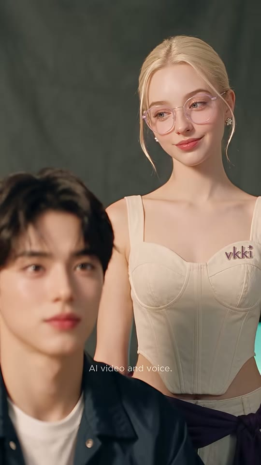

보키
부키(전경 흐림)
샷MS(보키) + 전경 부키앵글아이레벨, 약간 로우(부키 어깨 높이)카메라고정구도보키가 오른쪽 2/3에 서 있는 미디엄샷(허리 위), 코르셋의 vkki 로고가 오른쪽 가슴에 선명. 전경 좌하단에 부키 얼굴이 아웃포커스로 걸림(깊이감). 자막은 보키 얼굴 바로 아래 y≈39%.동작보키가 눈을 감고 만족스럽게 미소 지으며 'That's a no.' 하고, 눈을 떠 아래의 부키를 내려다보며 윙크하듯 웃음. 부키는 무표정.대사보키: "That's a no." (17.42~)화면 자막"That's a no" — 'no' 노랑, y≈39%, 17.42~18.39들어오는 전환하드컷효과음/음악BGM 그대로 컷아웃(페이드 없음, 하드 엔드)역할펀치라인/결론: 'I can't say' = 사실상 거절(no)이라는 뉘앙스 정리 → 루프 시 첫 컷 기자회견으로 자연 연결
1순위
minimax-h3대사 립싱크+음성 동시 생성, 무료 — CU 대사컷 기본
2순위
seedance-2-5원본 해시태그(#seedance25)와 같은 계열, 미세표정·피부질감 재현 우수
3순위
kling-v3-omni레퍼런스 이미지 고정력+립싱크 백업
① 이미지 프롬프트 (원본 클론)photoreal cinematic live-action, vertical 9:16, 608x1080 composition, shallow depth of field, olive-grey muslin backdrop. Medium shot of Voki, a Caucasian woman in her 20s, platinum-blonde hair slicked back into a low bun with two thin face-framing strands, round thin lavender-pink metal-frame glasses, blue-grey eyes, small pearl-cluster stud earrings, cream sweetheart corset top with a small purple embroidered 'vkki' logo on the left bust, white wide trousers with a dark plum sash tied at the waist standing on the right two-thirds of the frame, waist up, the purple 'vkki' logo on her corset clearly visible; in the soft-focus foreground bottom-left, Buki, a handsome Korean man in his early 20s, idol-like soft features, fair skin, dark brown-black curtain-fringe hair falling over the forehead, soft rosy lips, wearing a navy-blue cotton coach jacket with silver snap buttons over a plain white crew-neck T-shirt's face and shoulders. Eye level at Buki's height, slightly low toward Voki. 50mm f/2, warm key from left.
② 영상 프롬프트 (원본 클론)Duration 1.22s. Static. Voki closes her eyes with a satisfied smile and says with lip-sync: "That's a no." then opens her eyes and looks down at Buki with a teasing smile. Buki stays neutral in soft focus. Ends abruptly (hard cut to end).
③ 동물 버전 이미지 프롬프트photoreal cinematic live-action with realistic fur (not cartoon), anthropomorphic animals at human scale, vertical 9:16, shallow depth of field, olive-grey backdrop. Medium shot of Voki-cat, an anthropomorphic cream Ragdoll cat with blue eyes, head fur swept back sleek like a low bun with two wispy strands, round thin lavender-pink metal-frame glasses, pearl stud earrings on the ears, cream sweetheart corset top with a small purple embroidered 'vkki' logo, white wide trousers with a dark plum sash standing on the right two-thirds, waist up, 'vkki' logo visible; soft-focus foreground bottom-left: Hamjji, an anthropomorphic golden-and-white Syrian hamster sitting upright like a person, big glossy black eyes, pink nose, fluffy forehead fur styled like a curtain fringe, wearing a tiny navy-blue coach jacket with silver snap buttons over a white crew-neck T-shirt's fluffy face. 50mm f/2.
④ 동물 버전 영상 프롬프트Duration 1.22s. Voki-cat closes her eyes contentedly, says with mouth-synced animation: "That's a no.", then opens her eyes and looks down at Hamjji with a teasing smile, tail swaying. Hamjji stays neutral in soft focus.
네거티브[human version] cartoon, anime, 3d render look, plastic skin, extra fingers, deformed hands, fused fingers, warped face, identity drift, double face, text artifacts, misspelled captions, random logos, watermark, subtitles baked in, low resolution, heavy motion blur, jitter, flicker, overexposed, oversaturated, fisheye distortion, dutch angle, letterbox, horizontal 16:9 framing || [animal version] human faces, human skin, realistic human hands (except where specified), creepy uncanny hybrid, mutated paws, extra limbs, cartoon 2D, low-poly, fur clumping artifacts, plastic fur, misspelled text, random logos, baked subtitles, flicker, jitter, 16:9 framing
✂️ 편집 키트
타임라인0.00 와이드 기자회견(훅) → 0.79 부키 CU 'A sequel? … I can't tell'(오답) → 5.04 와이드 마이크 급접근+랙포커스(오해 리액션) → 7.08 보키 속삭임 투샷 'That means you don't know' → 8.83 보키 CU 'You mean no / Say: I can't say'(정답) → 11.46 부키 CU 'I can't say'(따라말하기) → 14.00 보키 CU 'Say: I can't ____'(퀴즈) → 15.13 부키 CU 'I can't ____'(시청자 쉐도잉) → 16.29 와이드(마이크 물러남) → 17.17 보키 MS 'That's a no'(펀치라인) → 18.39 하드 엔드. 전환 전부 하드컷, 페이드 없음.
FFmpeg 명령# === 0) 폴더 구조 (Windows PowerShell/Git Bash 공통, 창 안 뜸) ===
# clips\s01.mp4 ... (각 컷 생성 결과: 오디오=립싱크 대사 포함) / bgm.mp3 / subs.ass / fonts\Poppins-SemiBold.ttf
# 🔴 Poppins SemiBold/Regular TTF를 fonts 폴더에 넣을 것(미설치 시 Arial로 대체돼 자막이 약 25% 좁아짐 — 원본과 크기 불일치)
mkdir norm
# === 1) 컷별 정규화: 정확한 길이(-t)·608x1080·24fps·오디오 44.1k 스테레오 (오디오 없는 컷은 anullsrc로 채움) ===
ffmpeg -nostdin -y -i clips/s01.mp4 -f lavfi -i anullsrc=r=44100:cl=stereo -filter_complex "[0:v]scale=608:1080:force_original_aspect_ratio=increase,crop=608:1080,fps=24,setsar=1,trim=0:0.792,setpts=PTS-STARTPTS[v];[1:a]atrim=0:0.792[a]" -map "[v]" -map "[a]" -c:v libx264 -crf 15 -preset slow -pix_fmt yuv420p -c:a aac -ar 44100 -ac 2 norm/s01.mp4 # s01 0.0-0.79 (0.792s) — 클립에 대사 오디오가 없을 때(무음 채움)
ffmpeg -nostdin -y -i clips/s02.mp4 -f lavfi -i anullsrc=r=44100:cl=stereo -filter_complex "[0:v]scale=608:1080:force_original_aspect_ratio=increase,crop=608:1080,fps=24,setsar=1,trim=0:4.25,setpts=PTS-STARTPTS[v];[1:a]atrim=0:4.25[a]" -map "[v]" -map "[a]" -c:v libx264 -crf 15 -preset slow -pix_fmt yuv420p -c:a aac -ar 44100 -ac 2 norm/s02.mp4 # s02 0.79-5.04 (4.25s) — 클립에 대사 오디오가 없을 때(무음 채움)
ffmpeg -nostdin -y -i clips/s03.mp4 -f lavfi -i anullsrc=r=44100:cl=stereo -filter_complex "[0:v]scale=608:1080:force_original_aspect_ratio=increase,crop=608:1080,fps=24,setsar=1,trim=0:2.041,setpts=PTS-STARTPTS[v];[1:a]atrim=0:2.041[a]" -map "[v]" -map "[a]" -c:v libx264 -crf 15 -preset slow -pix_fmt yuv420p -c:a aac -ar 44100 -ac 2 norm/s03.mp4 # s03 5.04-7.08 (2.041s) — 클립에 대사 오디오가 없을 때(무음 채움)
ffmpeg -nostdin -y -i clips/s04.mp4 -f lavfi -i anullsrc=r=44100:cl=stereo -filter_complex "[0:v]scale=608:1080:force_original_aspect_ratio=increase,crop=608:1080,fps=24,setsar=1,trim=0:1.75,setpts=PTS-STARTPTS[v];[1:a]atrim=0:1.75[a]" -map "[v]" -map "[a]" -c:v libx264 -crf 15 -preset slow -pix_fmt yuv420p -c:a aac -ar 44100 -ac 2 norm/s04.mp4 # s04 7.08-8.83 (1.75s) — 클립에 대사 오디오가 없을 때(무음 채움)
ffmpeg -nostdin -y -i clips/s05.mp4 -f lavfi -i anullsrc=r=44100:cl=stereo -filter_complex "[0:v]scale=608:1080:force_original_aspect_ratio=increase,crop=608:1080,fps=24,setsar=1,trim=0:2.625,setpts=PTS-STARTPTS[v];[1:a]atrim=0:2.625[a]" -map "[v]" -map "[a]" -c:v libx264 -crf 15 -preset slow -pix_fmt yuv420p -c:a aac -ar 44100 -ac 2 norm/s05.mp4 # s05 8.83-11.46 (2.625s) — 클립에 대사 오디오가 없을 때(무음 채움)
ffmpeg -nostdin -y -i clips/s06.mp4 -f lavfi -i anullsrc=r=44100:cl=stereo -filter_complex "[0:v]scale=608:1080:force_original_aspect_ratio=increase,crop=608:1080,fps=24,setsar=1,trim=0:2.542,setpts=PTS-STARTPTS[v];[1:a]atrim=0:2.542[a]" -map "[v]" -map "[a]" -c:v libx264 -crf 15 -preset slow -pix_fmt yuv420p -c:a aac -ar 44100 -ac 2 norm/s06.mp4 # s06 11.46-14.0 (2.542s) — 클립에 대사 오디오가 없을 때(무음 채움)
ffmpeg -nostdin -y -i clips/s07.mp4 -f lavfi -i anullsrc=r=44100:cl=stereo -filter_complex "[0:v]scale=608:1080:force_original_aspect_ratio=increase,crop=608:1080,fps=24,setsar=1,trim=0:1.125,setpts=PTS-STARTPTS[v];[1:a]atrim=0:1.125[a]" -map "[v]" -map "[a]" -c:v libx264 -crf 15 -preset slow -pix_fmt yuv420p -c:a aac -ar 44100 -ac 2 norm/s07.mp4 # s07 14.0-15.13 (1.125s) — 클립에 대사 오디오가 없을 때(무음 채움)
ffmpeg -nostdin -y -i clips/s08.mp4 -f lavfi -i anullsrc=r=44100:cl=stereo -filter_complex "[0:v]scale=608:1080:force_original_aspect_ratio=increase,crop=608:1080,fps=24,setsar=1,trim=0:1.167,setpts=PTS-STARTPTS[v];[1:a]atrim=0:1.167[a]" -map "[v]" -map "[a]" -c:v libx264 -crf 15 -preset slow -pix_fmt yuv420p -c:a aac -ar 44100 -ac 2 norm/s08.mp4 # s08 15.13-16.29 (1.167s) — 클립에 대사 오디오가 없을 때(무음 채움)
ffmpeg -nostdin -y -i clips/s09.mp4 -f lavfi -i anullsrc=r=44100:cl=stereo -filter_complex "[0:v]scale=608:1080:force_original_aspect_ratio=increase,crop=608:1080,fps=24,setsar=1,trim=0:0.875,setpts=PTS-STARTPTS[v];[1:a]atrim=0:0.875[a]" -map "[v]" -map "[a]" -c:v libx264 -crf 15 -preset slow -pix_fmt yuv420p -c:a aac -ar 44100 -ac 2 norm/s09.mp4 # s09 16.29-17.17 (0.875s) — 클립에 대사 오디오가 없을 때(무음 채움)
ffmpeg -nostdin -y -i clips/s10.mp4 -f lavfi -i anullsrc=r=44100:cl=stereo -filter_complex "[0:v]scale=608:1080:force_original_aspect_ratio=increase,crop=608:1080,fps=24,setsar=1,trim=0:1.223,setpts=PTS-STARTPTS[v];[1:a]atrim=0:1.223[a]" -map "[v]" -map "[a]" -c:v libx264 -crf 15 -preset slow -pix_fmt yuv420p -c:a aac -ar 44100 -ac 2 norm/s10.mp4 # s10 17.17-18.39 (1.223s) — 클립에 대사 오디오가 없을 때(무음 채움)
# 클립에 립싱크 대사 오디오가 있으면 위 줄 대신 이 형태(예: s02, 오디오 유지+부족분 apad):
# ffmpeg -nostdin -y -i clips/s02.mp4 -t 4.25 -vf "scale=608:1080:force_original_aspect_ratio=increase,crop=608:1080,fps=24,setsar=1" -af "aresample=44100,apad" -ac 2 -c:v libx264 -crf 15 -preset slow -pix_fmt yuv420p -c:a aac norm/s02.mp4
# === 2) 이어붙이기 (하드컷 전부, xfade 없음 — 원본에 디졸브 없음) ===
# list.txt 내용: file 'norm/s01.mp4' ... file 'norm/s10.mp4' 한 줄씩
ffmpeg -nostdin -y -f concat -safe 0 -i list.txt -c:v libx264 -crf 15 -preset slow -pix_fmt yuv420p -r 24 -c:a aac -ar 44100 joined.mp4
# === 3) 자막 burn-in + BGM 덕킹 + 라우드니스 (원본 실측 -17.2 LUFS 재현; 쇼츠 표준 -14 원하면 I=-14) ===
ffmpeg -nostdin -y -i joined.mp4 -stream_loop -1 -i bgm.mp3 -filter_complex "[0:v]ass=subs.ass:fontsdir=fonts[v];[0:a]aresample=44100,asplit=2[vo][sc];[1:a]aresample=44100,atrim=0:18.39,volume=0.30,afade=t=out:st=17.99:d=0.4[bg];[bg][sc]sidechaincompress=threshold=0.03:ratio=8:attack=15:release=280:makeup=1[duck];[vo][duck]amix=inputs=2:duration=first:normalize=0,loudnorm=I=-17.2:TP=-1.5:LRA=7[a]" -map "[v]" -map "[a]" -t 18.39 -c:v libx264 -crf 17 -preset slow -pix_fmt yuv420p -r 24 -c:a aac -b:a 192k -movflags +faststart final_WwCmU-oISPs.mp4
# === 4) (옵션) 페이드 투 블랙 — 원본은 없음(하드 엔드). 필요할 때만: ===
# ffmpeg -nostdin -y -i final_WwCmU-oISPs.mp4 -vf "fade=t=out:st=17.89:d=0.5" -af "afade=t=out:st=17.89:d=0.5" -c:v libx264 -crf 17 -c:a aac final_WwCmU-oISPs_fade.mp4
# === 5) 검증 ===
ffprobe -v error -show_entries format=duration:stream=width,height,r_frame_rate -of compact final_WwCmU-oISPs.mp4
ffmpeg -nostdin -hide_banner -i final_WwCmU-oISPs.mp4 -af ebur128 -f null - 2>&1 | findstr /C:"I:"
ASS 자막 스타일[Script Info]
ScriptType: v4.00+
PlayResX: 608
PlayResY: 1080
WrapStyle: 2
ScaledBorderAndShadow: yes
[V4+ Styles]
Format: Name, Fontname, Fontsize, PrimaryColour, SecondaryColour, OutlineColour, BackColour, Bold, Italic, Underline, StrikeOut, ScaleX, ScaleY, Spacing, Angle, BorderStyle, Outline, Shadow, Alignment, MarginL, MarginR, MarginV, Encoding
Style: Line,Poppins SemiBold,36,&H00FFFFFF,&H00FFFFFF,&H00101010,&H99000000,0,0,0,0,100,100,0,0,1,1.4,1.6,5,20,20,0,1
Style: Disclose,Poppins,17,&H4DFFFFFF,&H4DFFFFFF,&H00000000,&H00000000,0,0,0,0,100,100,0.5,0,1,0,0.6,5,0,0,0,1
[Events]
Format: Layer, Start, End, Style, Name, MarginL, MarginR, MarginV, Effect, Text
Dialogue: 0,0:00:00.00,0:00:18.39,Disclose,,0,0,0,,{\pos(304,855)}AI video and voice.
Dialogue: 1,0:00:02.40,0:00:03.88,Line,,0,0,0,,{\pos(304,700)}A sequel?
Dialogue: 1,0:00:03.92,0:00:05.04,Line,,0,0,0,,{\pos(304,733)}I can't {\c&H002AF0F5&}tell
Dialogue: 1,0:00:07.30,0:00:08.79,Line,,0,0,0,,{\pos(304,674)}That means {\c&H002AF0F5&}you don't know
Dialogue: 1,0:00:08.92,0:00:09.95,Line,,0,0,0,,{\pos(304,708)}You mean {\c&H002AF0F5&}no
Dialogue: 1,0:00:09.95,0:00:11.29,Line,,0,0,0,,{\pos(304,708)}Say: I can't {\c&H002AF0F5&}say
Dialogue: 1,0:00:13.04,0:00:14.00,Line,,0,0,0,,{\pos(304,757)}I can't {\c&H002AF0F5&}say
Dialogue: 1,0:00:14.00,0:00:15.13,Line,,0,0,0,,{\pos(304,700)}Say: I can't {\c&H002AF0F5&}____
Dialogue: 1,0:00:15.13,0:00:16.21,Line,,0,0,0,,{\pos(304,757)}I can't {\c&H002AF0F5&}____
Dialogue: 1,0:00:17.42,0:00:18.39,Line,,0,0,0,,{\pos(304,418)}That's a {\c&H002AF0F5&}no
HyperFrames 편집 프롬프트 (Claude에 그대로 붙여넣기)HyperFrames로 608x1080, 24fps, 총 18390ms 세로 쇼츠를 만들어줘. 컷 클립은 clips/s01~s10.mp4(각 클립은 지정 길이로 트림, 모두 하드컷, 트랜지션 없음).
컷 타이밍(ms): s01 0-792 / s02 792-5042 / s03 5042-7083 / s04 7083-8833 / s05 8833-11458 / s06 11458-14000 / s07 14000-15125 / s08 15125-16292 / s09 16292-17167 / s10 17167-18390.
자막: 폰트 Poppins SemiBold 36px, 흰색, 1.4px 검정 외곽선 + 드롭섀도(0,2px,4px,rgba(0,0,0,.6)), 가운데 정렬, 애니메이션 없이 즉시 표시/즉시 사라짐(opacity 0→1 0ms). 키워드는 #F5F02A. 각 자막 위치는 top 값(px, 1080 기준 중심선):
2400-3880 'A sequel?' y700 / 3920-5040 'I can't [tell]' y733 / 7300-8790 'That means [you don't know]' y674 / 8920-9950 'You mean [no]' y708 / 9950-11290 'Say: I can't [say]' y708 / 13040-14000 'I can't [say]' y757 / 14000-15130 'Say: I can't [____]' y700 / 15130-16210 'I can't [____]' y757 / 17420-18390 'That's a [no]' y418. ([ ]=노랑, ____는 노란 4px 밑줄 60px 폭)
상시 오버레이: 'AI video and voice.' Poppins Regular 17px, 흰색 70% 불투명, 가로 중앙 y855, 0-18390ms.
오디오: 각 클립 대사 오디오 유지 + bgm.mp3 볼륨 0.30, 대사 구간 사이드체인 덕킹(-8dB, attack 15ms, release 280ms), 18000ms부터 BGM 400ms 페이드아웃 없이 원본처럼 18390ms에 하드 컷. 최종 -17 LUFS(쇼츠 업로드용이면 -14 LUFS 버전 추가).
영상 페이드 인/아웃 없음. 렌더 후 프레임 수 441(=18.39s×24) 확인.
✅ 똑같이 만들기 체크리스트
- 컷 길이를 cuts.json 실측과 프레임 단위로 일치(0.79/4.25/2.04/1.75/2.63/2.54/1.13/1.17/0.88/1.22초) — 특히 1번 0.79초 초단 훅 유지
- 부키 CU(2·6·8번)와 보키 CU(5·7번)는 각각 완전히 같은 프레이밍으로 재사용(같은 첫 프레임 이미지에서 생성)
- 모든 컷 전경에 기자 손+은색 마이크를 걸어 '기자 시점' 레이어 유지(와이드는 선명, CU는 우하단 아웃포커스)
- 자막은 화자 턱 아래로 위치 이동, 핵심 단어·빈칸만 노랑 #F5F02A, 페이드 없이 즉시 ON/OFF
- 'AI video and voice.' 고지 문구 y≈79% 전 구간 상시(AI 생성물 표기)
- 3번 컷의 마이크 렌즈 급접근+랙포커스(오해 개그의 핵심 비주얼)를 반드시 구현
- 빈칸 퀴즈 두 컷(7·8번) 뒤 대사 공백을 남겨 시청자 쉐도잉 시간 확보
- 색보정: 따뜻한 텅스텐 키 + 올리브 회색 배경, 피부 매끈 소프트, 필름 그레인 약하게
- 엔딩은 페이드 없이 하드컷(루프 연결), 최종 라우드니스 -17 LUFS 전후
🐹 동물 버전 기획주인공 부키 → 햄찌(골든 시리안 햄스터, 네이비 코치 재킷), 보키 → 크림 랙돌 고양이 '보키냥'(라벤더 원형 안경·진주 귀걸이·vkki 코르셋 그대로), 긴머리 여성 → 턱시도 고양이(크림 니트), 원시인 → 거대한 메인쿤 고양이 원시인(털가죽+작은 생수병 — 크기 대비 개그 유지), 기자 손 → 주황 태비 고양이 앞발+은색 마이크. 모든 동물은 사람 크기 의인화로 같은 세트(올리브 배경천·커피 얼룩 테이블·틸 모니터)에 배치해 구도·렌즈·조명·컷 길이·자막 위치/색은 100% 그대로 둔다. 바꾸는 것: 얼굴/털 질감, 입 모양 립싱크(동물 입 애니메이션), 목소리 톤(햄찌는 한 톤 높은 귀여운 남성, 보키냥은 장난스러운 여성). 대사·학습 포인트(I can't tell ↔ I can't say)와 빈칸 퀴즈 구조는 변경 금지. 캐릭터 시트 4장(햄찌/보키냥/턱시도/메인쿤)을 먼저 만들고 모든 컷을 image2image 레퍼런스로 생성해 일관성 유지.
전체 프레임 시트 보기 (타임코드 포함)
전체 흐름

전체 흐름
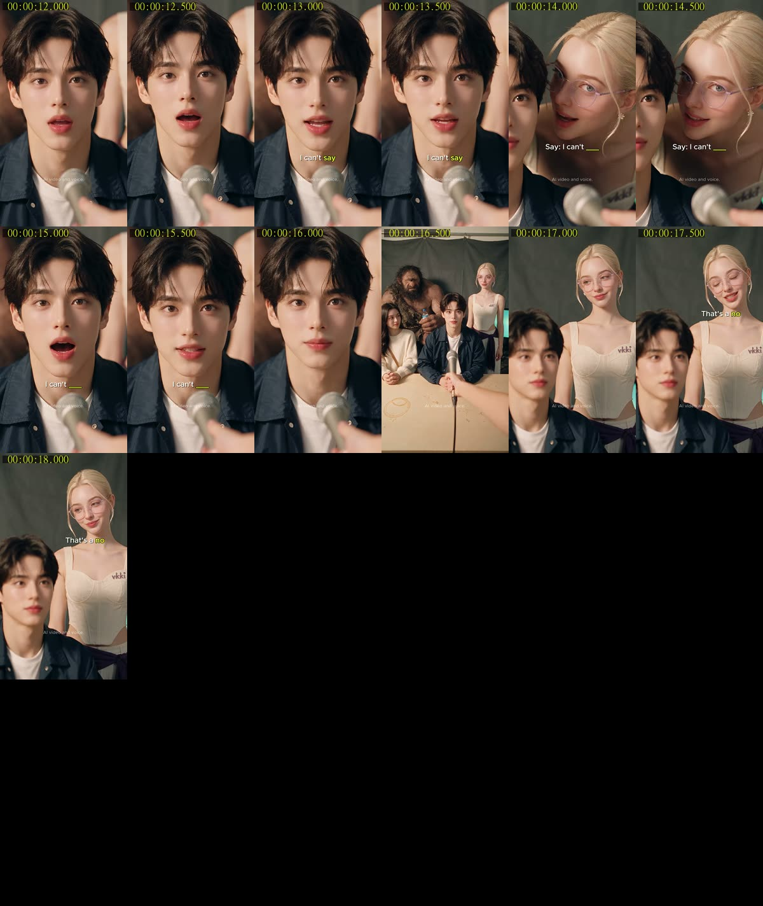